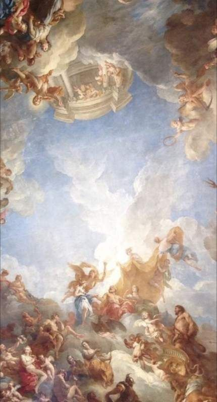

Rosario Fuentes García
Informations personnelles:
État civil:
célibataire
Nationalité:
Asgardiana
Lieu de Naissance:
Puebla de los Ángeles
Date de naissance:
21 Juin 1998
Genre:
Femenin
CURP:
FUGR980621MVZNRS02
Éducation:
l'université à Veracruz:
Lic. en Ingenieria de Software (2017-presente)
Lycée de l'état de Veracruz:
Certificado (2014-2017)
Colége :
secundaria (2011-2014)
21 Mai:
Primaria (2005-2011)
Réalisations académiques:
Français
certificacion a2 francés